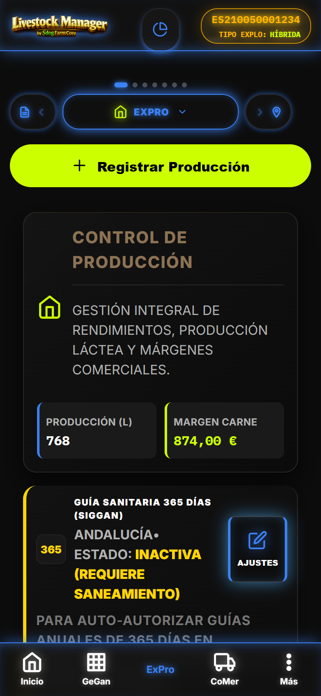
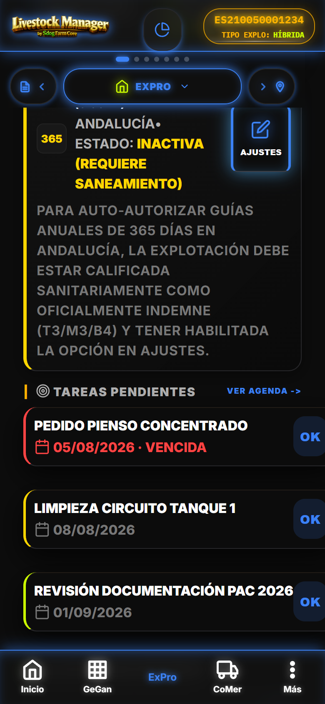
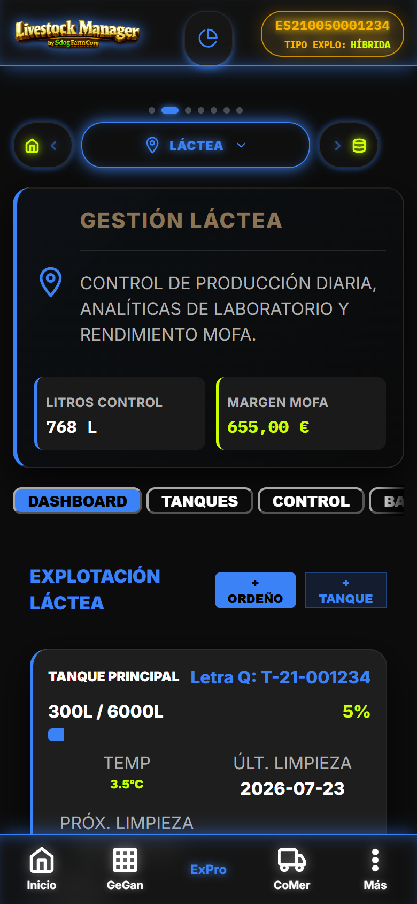
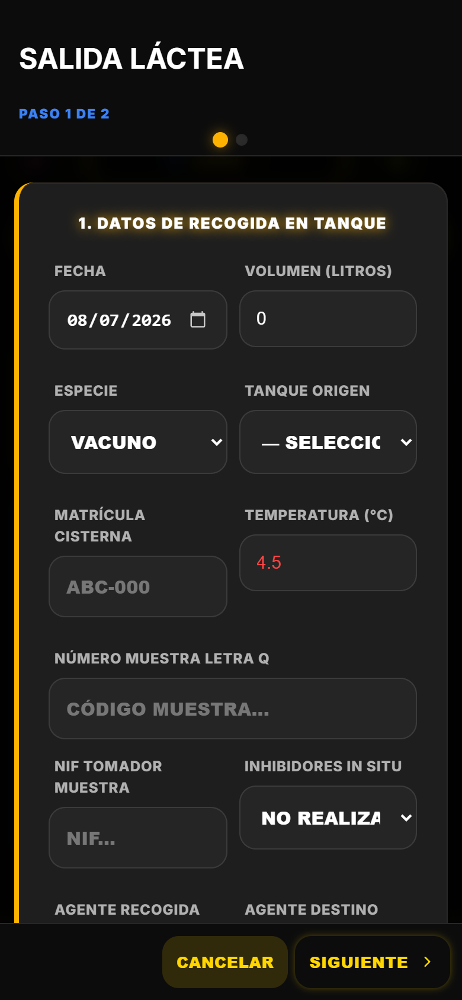
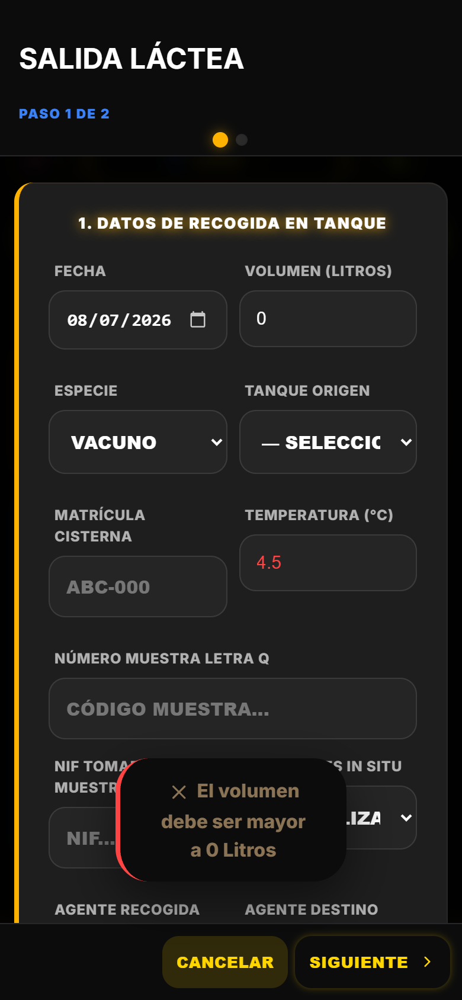
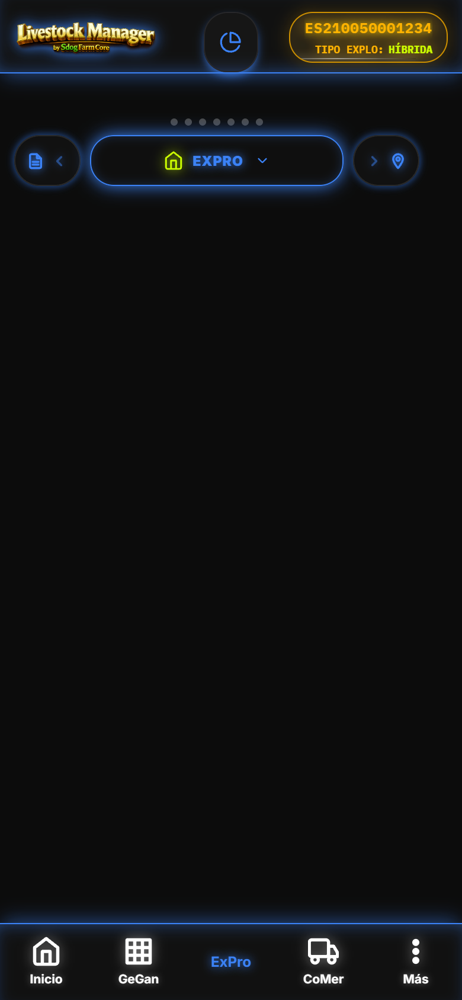
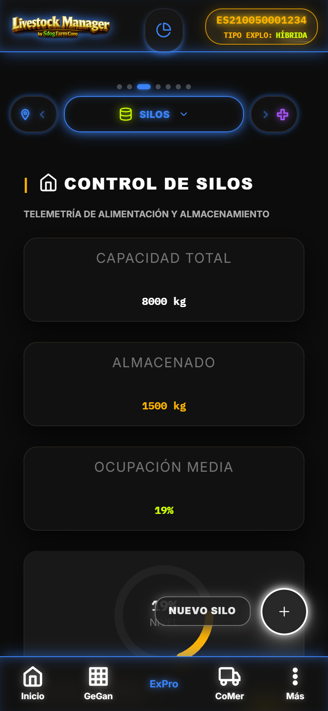

1. Vista Explotación (ExPro) — Carrusel 11 Tabs
Vista unificada #/explotacion con carrusel circular App.renderCarruselPestanas (11 tabs: 7 operativos + 4 wizards). Header color verde lima (--c-success).
js/views/explotacion-view.js · window.ExplotacionView1.1 Carrusel de Submodulos (11 Tabs)
| Key | Label | Icono | Color | Tipo | Vista Delegada |
|---|---|---|---|---|---|
| explotacion | EXPRO | finca | var(--c-success) | Tab | ExplotacionView (pestaña principal) |
| lacteo | LACTEA | leche | var(--c-info) | Tab | ExplotacionLacteaView (5 sub-tabs) |
| silos | SILOS | silos | var(--c-success) | Tab | SilosView (telemetria SVG) |
| fitosanitarios | FITOSANITARIOS | sanidad | var(--c-purple) | Tab | FitosanitariosView |
| gastos | FINANZAS | dinero | var(--c-purple) | Tab | GastosView |
| proveedores | PROVEEDORES | proveedores | var(--c-purple) | Tab | ProveedoresView |
| tramites | TRAMITES | documento | var(--c-info) | Tab | Hub administrativo (6 sub-tabs) |
| traslado | TRASLADOS | - | - | Wizard | Wizard movimiento (via carrusel) |
| censo | CENSO | - | - | Wizard | Wizard censo (via carrusel) |
| crotales | CROTALES | - | - | Wizard | Wizard crotales (via carrusel) |
| guia | GUIAS | - | - | Wizard | Wizard guia movimiento (via carrusel) |

[CAPTURA] explotacion-carrusel-11tabs.png Carrusel 11 tabs con wizards integrados, header verde lima ExPro1.2 Pestaña Principal "Explotación" — Balance Unificado
Contenido renderizado en la tab activa explotacion:
- Tarjeta resumen produccion: Litros control + Margen MOFA leche + Margen carne (KPIs unificados)
- Banner Guia Sanitaria 365 dias SIGGAN: Auto-autorizacion si finca indemne/calificada (Andalucia)
- Alerta telemetria silos: Stock < 15% (bento-style alert critica)
- Widget AgendaView: Proximas citas contextuales
- Actividad reciente unificada: Ordeños + Pesajes con busqueda por crotal/zona
- Acceso edicion/borrado: Via
App._cardRegistroen cada registro

[CAPTURA] explotacion-balance-unificado.png Tarjeta KPIs litros control + MOFA + margen carne, banner guia 365, alerta silos1.3 Submodulo Tramites — Hub Administrativo (6 Sub-tabs)
| Key | Label | Icono | Color |
|---|---|---|---|
| guias | Guías DIMOE | documento | var(--c-info) |
| censo | Censo Anual | animales | var(--c-warning) |
| crotales | Crotales | paquete | var(--c-success) |
| traslado | Traslados | trazabilidad | var(--c-purple) |
| infolac | Infolac | leche | var(--c-info) |
| archivo | Archivo | cuaderno | var(--c-orange) |
2. Submódulo Lácteo — 5 Sub-pestañas
ExplotacionLacteaView renderiza 5 sub-tabs horizontales con scroll. Dashboard concentra KPIs, tanques, ultima analitica y alertas MotorLacteo.
js/views/explotacion-lactea-view.js · window.ExplotacionLacteaView · Ruta: #/explotacion?sub=lacteo2.1 Sub-tab Dashboard
- Tanques: Stock actual/temp/limpieza (cards con gauge circular % llenado)
- KPIs produccion: Dia actual + 30 dias + MOFA (Margin Over Feed Cost)
- Ultima analitica: Con umbrales por especie/CCAA (semáforo verde/ambar/rojo)
- Alertas MotorLacteo: DANGER (bloqueante) / WARNING (aviso)

[CAPTURA] lacteo-dashboard.png Dashboard lacteo con tanques, KPIs, analitica semaforo, alertas MotorLacteo2.2 Sub-tab Tanques
Delegado a TanquesView.render(). Lista completa con estado, tipo, stock, temp, limpieza, acciones Editar/Limpieza.
2.3 Sub-tab Control (Analiticas + Controles DHI)
- Analiticas: Tipo, grasa, proteina, extracto seco, germenes, somaticas, laboratorio, estado
- Controles oficiales DHI: Fecha, organismo, media litros/grasa/proteina por rebaño
2.4 Sub-tab Balance (Movimientos Balance Lacteo)
Movimientos entrada/salida/merma/ajuste con referencia tipo/id, litros, fecha, turno. Iconos flecha arriba/abajo por tipo.
2.5 Sub-tab Graficos (5 Canvas Chart.js)
- Produccion mensual (linea)
- Calidad leche (linea/multi)
- Composicion (grasa/proteina/extracto seco - barras)
- Comparativa tanques (barras agrupadas)
- Curva lactacion (selector animal individual)
3. Wizards Lacteos (5) — Paso a Paso
Todos usan WizardManager.create() full-screen con header fijo, footer fijo (Guardar/Salir), validaciones complejas MotorLacteo/ComunidadesService.
3.1 Ordeño Wizard (3 Pasos)
| Paso | Titulo | Campos | Validaciones |
|---|---|---|---|
| 1 | DATOS DEL ORDEÑO | fecha (date), turno (select AM/PM), tanqueId (select Letra Q), temperatura (number C) | fecha obligatoria, tanque obligatorio |
| 2 | PRODUCCION POR ANIMAL | Tabla animales hembras rebaño lechero: crotal, nombre, litros (input) | Total litros > 0 |
| 3 | CONFIRMACION | Resumen read-only, Balance tanque proyectado | - |
Al completar: Produccion.saveLeche por animal + BalanceLacteo.registrar entrada + TanquesLeche.actualizarTemperatura + evento maestro Pesajes.registrar.
Disponibilidad: Solo si flag leche = true para la finca activa.
3.2 Tanque Wizard (1 Paso)
| Campo | Validacion |
|---|---|
| Nombre | Obligatorio |
| Codigo Letra Q* | Obligatorio (min 3 chars), Unicidad MAPA |
| Capacidad (L) | > 0 |
| Tipo | tanque_frio / cantara / cisterna |
| Temp objetivo/actual | Numerico |
| Observaciones | Opcional |
Al completar: TanquesLeche.create/update.
3.3 Albaran Leche Wizard (2 Pasos) — Completitud Normativa RD 989/2022, INFOLAC, Letra Q 2.0

[CAPTURA] wizard-albaran-leche-paso1.png Paso 1: Datos recogida en tanque (25+ campos normativos)
[CAPTURA] wizard-albaran-leche-paso2.png Paso 2: Analitica y liquidacion con recalculo precio en vivo (grasa, proteina, somaticas, aflatoxina M1)Paso 1: Datos de Recogida en Tanque (25+ campos)
- Fecha, Volumenes L, Especie (vacuno/ovino/caprino), Tanque origen
- Matricula cisterna, Temp, Nº muestra Letra Q, NIF tomador
- Inhibidores in situ (no_realizada/conforme/no_conforme)
- Agentes recogida/destino NIF (compradores lacteos)
- Tipo movimiento Letra Q (7 tipos RD 989/2022), Estado Letra Q (4 estados)
- Campos cisterna→cisterna, Nº muestreo oficial, Horas ordeño/carga
- Contrato, CCAA, Cadena frio, Certificado inhibidores
Paso 2: Analitica y Liquidacion (Opcional)
- Grasa, Proteina, Germenes, Somaticas (recalculo precio en vivo)
- Aflatoxina M1 (Plan PIVCA) con metodo (kit_rapido/ELISA/HPLC)
- Fecha analisis, Laboratorio, Antibioticos
- Costes alimentacion, Precio base, Primas/penalizaciones
- Precio extracto seco → Precio final €/L e Importe total calculados en vivo
Validaciones Complejas (Bloqueantes)
MotorLacteo.validarComercializacion(temp, stock tanque, inhibidores)MotorLacteo.validarMovimientoLetraQ(reglas MAPA intermediarios, codigos cisterna)- Bloqueo sanitario automatico:
Sanitarios.verificarRetiroLechepor rebaño +MotorTrazabilidad.checkSupresionpor animal (leche) ComunidadesService.evaluarCalidadLecheEspecie(umbrales por especie/CCAA)
Al completar: comercializacion_leche + analiticas_leche (si hay datos lab) + balance_lacteo salida + documento_legal infolac_declaracion + evento maestro Pesajes.registrar rol VENTA + impresion albaran.
3.4 Analitica Leche Wizard (1 Paso)
| Campo | Validacion |
|---|---|
| Fecha muestreo | Obligatoria |
| Especie | vacuno/ovino/caprino |
| Tipo muestreo | autocontrol / oficial |
| Tanque | Select |
| Grasa, Proteina, Germenes 30C, Celulas somaticas | Numericos |
| Laboratorio | Nombre (oficiales por CCAA) |
| Inhibidores | no_realizada/conforme/no_conforme |
Al completar: AnaliticasLeche.create.
3.5 Movimiento Balance Wizard (1 Paso)
| Campo | Validacion |
|---|---|
| Tanque | Obligatorio |
| Tipo movimiento | entrada / salida / merma / ajuste |
| Cantidad L | > 0 (salvo ajuste >= 0 = stock absoluto nuevo) |
| Fecha, Temperatura, Observaciones | Opcionales |
Al completar: BalanceLacteo.registrar (referencia_tipo: manual).
4. Tanques — Letra Q MAPA
Gestion completa de tanques de leche (tanque_frio, cantara, cisterna) con historial movimientos por tanque desde BalanceLacteo.
js/views/tanques-view.js · window.TanquesView · Sub-tab via carrusel ExPro4.1 Listado y Gauge Circular
- Gauge circular stock % (animado, clickeable para recalibracion sensores)
- Temp actual / objetivo, Prox/Ult limpieza
- Historial ultimos 5 movimientos (entrada/salida) con fechas
4.2 Acciones
- Editar: Abre
TanqueWizard - Registrar Limpieza:
TanquesLeche.registrarLimpieza - Eliminar: Con confirmacion (solo si sin movimientos recientes)
4.3 Ficha Tecnica Modal
Gauge, KPIs, historial movimientos completos, botones rapidos Cargar/Consumir/Editar.

[CAPTURA] tanques-lista-gauge.png Listado tanques con gauge circular stock%, temp, limpieza, badge tipo5. Silos — Telemetria Gauge SVG Animado
Telemetria de silos de pienso con gauge SVG circular animado, calculo de autonomia (dias) basado en consumo real 30d (registro_eventos tipo silo_consumo), alertas stock <15%, <35%.
js/views/silos-view.js · window.SilosView · Sub-tab via carrusel ExPro5.1 KPIs Globales
- Capacidad total, Almacenado, Ocupacion media %
- Autonomia (dias) calculada sobre consumo real 30d
5.2 Card por Silo (card-dark-gradient con gauge SVG)
- Gauge circular clickeable (recalibracion sensores: animacion SVG 0% -> CAL -> valor real)
- Ficha tecnica (modal): gauge, KPIs, historial movimientos, botones rapidos
- Acciones: Cargar / Consumir / Editar / Eliminar

[CAPTURA] silos-gauge-svg.png Cards silo con gauge SVG circular animado, stock%, autonomia dias, badge critico inferior a 15%5.3 Cargar Silo
Proveedor, cantidad, coste, factura → genera gasto categoria Alimentacion + evento registro_eventos tipo silo_carga.
5.4 Consumir Silo
Rebaño opcional, sacos x kg/saco, valor opcional → descuenta stock, genera gasto vinculado a rebaño + evento silo_consumo (base calculo ICA).
5.5 Alertas Stock
- CRITICO (<15%): Badge rojo, alerta Bento en ExPro principal
- ADVERTENCIA (<35%): Badge ambar
- ESTABLE: Badge verde
6. Vista Producción — Tabs Carnica / Lactea
Vista #/produccion con tabs principales Cárnica y Lactea. Espejo de ExPro pero enfocada en listas de registros con KPIs y FAB. Duplica logica Láctea de ExplotacionLacteaView.
js/views/produccion-view.js · window.ProduccionView6.1 Tab Carnica (Carne)
- Lista de pesajes (individual/lote) con KPIs total kg y count
- FAB "Registrar Pesaje" (solo si flag carne=true)
6.2 Tab Lactea (Leche) — 4 Sub-tabs
| Sub-tab | Contenido |
|---|---|
| Dashboard | KPIs (Produccion hoy, Total L, Extracto seco medio, Analiticas), 3 tanques, ultima analitica, botones accion Ordeño/Tanque |
| Tanques | Lista completa tanques (estado, tipo, stock, temp, limpieza) con acciones Editar/Limpieza |
| Control | Mismo contenido que ExplotacionLacteaView.renderControl (analiticas + DHI) |
| Balance | Mismo contenido que ExplotacionLacteaView.renderBalance (movimientos balance) |
6.3 Extras Tabs Produccion
- Ventas (expediciones)
- Gastos
7. Integracion SIGGAN (Andalucia) / BADIGEX (Extremadura)
Campos normativos obligatorios en wizards y vistas. 100% implementado segun RD 989/2022, RD 787/2023, MAPA Letra Q 2.0.
7.1 Letra Q (Registro General Agentes Sector Lacteo - MAPA)
codigo_letra_q(tanque, cisterna, muestra) — formato unico, validacion MAPAtipo_movimiento_letra_q(7 tipos RD 989/2022): explotacion_a_cisterna, explotacion_a_rechazo, explotacion_a_establecimiento, cisterna_a_cisterna, cisterna_a_rechazo, cisterna_a_establecimientoestado_letra_q(4 estados): pendiente, comunicado, rechazado, exentofecha_limite_comunicacion_letra_q(calculoMotorLacteosegun tipo agente destino)fecha_comunicado_letra_q,recibo_letra_q(identificacion productor, codigo explotacion, fecha_hora, litros, operador, muestra)
7.2 INFOLAC (Declaracion Lactea Oficial)
estado_tramite_infolac: borrador / presentado / validado / errorfecha_presentacion_infolac,numero_registro_infolac,acuse_infolacnumero_infolac(finca),documento_legaltipoinfolac_declaracion- Contrato lacteo obligatorio 1 ano minimo (tipo explotacion leche/mixto)
7.3 DIMOE / Guías 365 dias (Andalucia)
guia_movimientoendocumentos_legalesguia_365_habilitada+calificacion_sanitaria(indemne/calificada) → auto-autorizacion 365 diasComunidadesService.getConfiguracionCCAA(guia_automatica_si_saneada)
7.4 REGA / Censo / Crotales / Libro Registro
- Declaracion censal (
documentos_legalestipo DECLARACION_CENSAL/censo_anual) - Pedidos crotales (
pedidos_crotales) - Libro registro / Cuaderno digital
7.5 Calidad Leche (Umbrales por Especie/CCAA)
ComunidadesService.getUmbralesCalidadEspecie(vacuno/ovino/caprino) → grasa min, proteina min, germenes max, somaticas maxComunidadesService.evaluarCalidadLecheEspecie(bloqueante/alertas)- Aflatoxina M1 (Plan PIVCA) con metodo (kit_rapido/ELISA/HPLC)
- Inhibidores in situ (no_realizada/conforme/no_conforme)
- Laboratorios oficiales por CCAA (
ComunidadesService.getLaboratoriosLeche)
7.6 Precios Referencia
ComunidadesService.PRECIO_EXTRACTO_SECO_REF (precio_base_referencia, precio_por_punto_extracto, tasa_INLAC_defecto) para recalculo en vivo en Albaran Leche Wizard.
8. Datos Demo CHAMORRO — Precarga SeedData
Validacion guias PWA: ExPro 52/55 (vs 53/55 Android, 1 target por datos demo).
8.1 Precarga Relevante para ExPro/Lacteo
8.2 Pruebas Clave en Demo
- Ordeño Wizard completo con 3+ hembras activas -> genera BalanceLacteo entrada + actualiza temp tanque
- Albaran Leche Wizard con analitica -> recalculo precio extracto seco + INFOLAC + Letra Q
- Analitica Leche Wizard -> evaluacion calidad por CCAA (Andalucia) con alertas semaforo
- Silos: Cargar/Consumir -> genera eventos silo_carga/silo_consumo -> base ICA
- Tanques: Recalibracion gauge SVG (click gauge -> animacion 0% -> CAL -> valor real)
- Guia 365 auto-autorizacion (finca demo calificacion indemne/calificada)